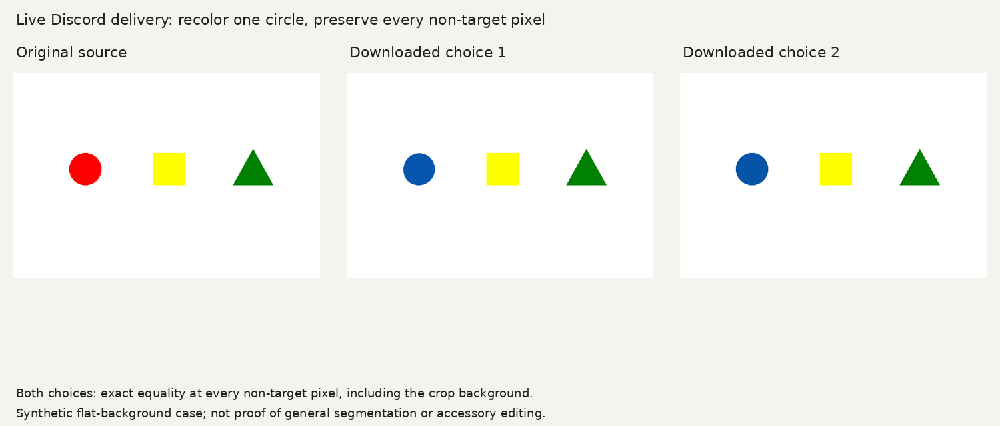
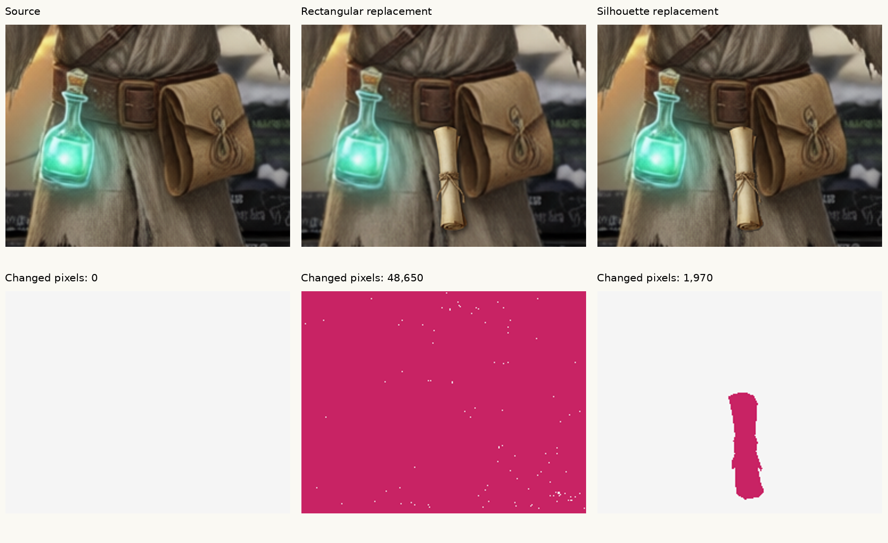
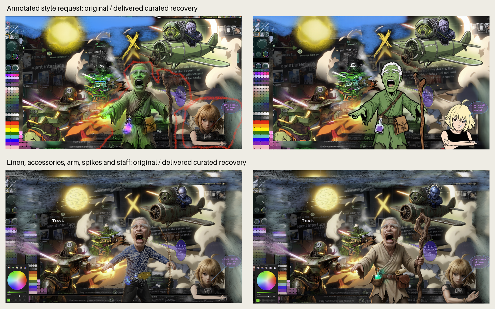
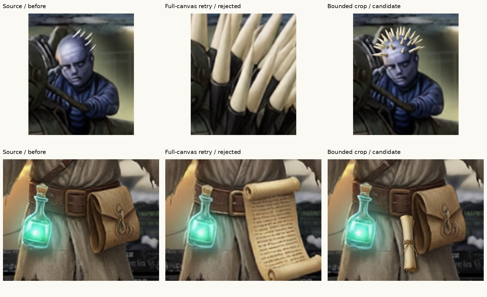
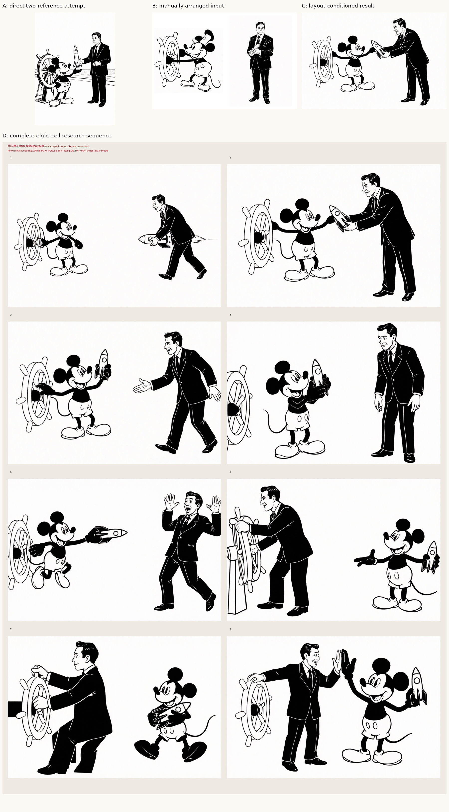
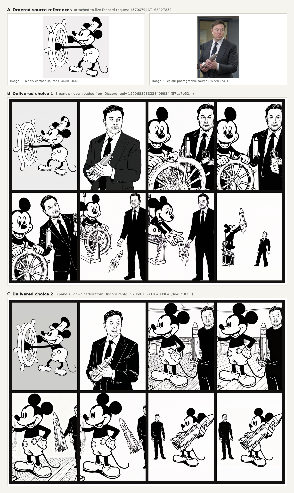

Final Research Report 002 · version 1.0, 28 November 2026. Editorial finalization of draft 0.3 (13 November 2026), not peer review or new experiments. Selected experiments and production recoveries, not a representative benchmark. Draft 0.3 added the live two-reference eight-panel comic pair (Figure 8) alongside the verified delivery lifecycle and pre-registered accessory study. Measurements and negative findings are unchanged. Automatic accessory additions remained disabled at the study close; historical deployment evidence below is not a fresh verification of current production.
Kraken is a conversational image-generation and editing pipeline. We investigated requests that exposed failures in reference identity, small-object editing, multi-part fulfillment and visual storytelling. The selected cases include a localized recolor, two complex image corrections and an eight-panel comic built from two ordered references.
We compared whole-image editing with manually bounded crop edits, then implemented a narrow automatic lane for recoloring or changing the material of one existing object. For comics, we separated planning, serial panel generation, visual acceptance, checkpointing and deterministic page assembly. Original attachments remain the authority for identity; planner suggestions must not silently become user requirements.
Image experiments used the local Qwen Image Edit backend. Recent recovery runs used Qwen Image Edit 2511 at 40 steps; recorded seeds and exact prompts appear in the appendix. Settings differ across earlier trials, so the figures are not controlled model comparisons. No paid-model superiority or population success rate is claimed.
Earlier crop-and-paste edits preserved the exterior but introduced a faint tint inside the crop. The revised lane derives a conservative connected-component mask from a flat-background source. Context pixels help the model interpret the object; they do not automatically become editable pixels. Holes, neighboring objects and surrounding background remain protected.

The 10 November live request delivered two downloadable PNGs and the 1 / 2 / neither voting reactions. Both target circles were blue. This verifies the narrow automatic lane through the real production entry point, including delivery. An earlier read-only audit separately matched a genuine human vote to its durable preference record and media archives.
For textured or ambiguous backgrounds, the extra silhouette mask declines rather than inventing a segmentation. This result does not establish automatic additions, anatomy repair, face replacement or arbitrary natural-image segmentation.
A matched five-control check exposed a weakness in model-only acceptance. It classified three controls correctly but falsely accepted a half-clipped circle and a displaced circle. We added exact protected-interior comparisons and source-silhouette retention checks; losing more than 2% of the source silhouette fails the narrow gate.
| Control | Expected | Combined gate |
|---|---|---|
| Unchanged red circle | Reject: request not fulfilled | Rejected |
| Correct blue circle | Accept | Accepted |
| Clipped circle | Reject: geometry lost | Rejected |
| Displaced circle | Reject: position changed | Rejected |
| Tinted background | Reject: collateral change | Rejected |
The combined gate passed all five controls in 302 seconds. That is five selected controls, not a calibrated general vision judge. The geometry check is deliberately conservative: recoloring an object to match its background may be rejected.

The annotated style request asked for two circled people to be restyled. Initial full-image attempts barely changed them, and one falsely passed automated acceptance. Correctly scaled crops produced cartoon-rendered subjects. Manual compositing and a cleanup generation integrated them; the cleanup removed speech bubbles, so their original text was restored before delivery.
The second request combined woven linen, three belt accessories, a forearm repair, scalp spikes and a wooden staff. A curated generation was reviewed against that request and delivered. Original speech-bubble regions were resized and composited back into the result. Neither recovery is a raw, unattended model output.

These are useful production outcomes, but not proof of general automatic accessory editing. The acceptance checker also interpreted an affection emoji as a request for decorative hearts; matched live controls now distinguish that closing expression from an actual request to add hearts.
Full-canvas retries put spikes on an aircraft instead of its pilot, or added a scroll by replacing a satchel. Manually localized edits produced better candidates: spikes stayed on the scalp and a scroll appeared alongside the potion and satchel. Exact outside-region comparisons passed.

An automatic localization trial selected a box that clipped spike tips and left a rectangular forehead seam. The whole-image inspector approved it incorrectly. Expanding the support and feathering inward improved the boundary, but did not prove exact count or complete fulfillment. Automatic new-geometry editing remains research work.
We turned that boundary observation into a pixel measure: the share of the edit boundary covered by generated content that continues into the edited region. Content cut off at the boundary leaves a seam. On the earlier spike trial, the measure gave 0.38 for the clipped box and 0 for the expanded support.
We then ran seven private requests through two paths. The bounded lane used an automatic vision localizer and a bounded edit. Its gate required a boundary measure of at most 0.10 plus production acceptance. The other path was the existing whole-image edit with its own acceptance. Before running, we wrote the rule: bounded additions would be enabled only if no gate-passing output was wrong on direct review, and only if the bounded lane was correct at least as often as the whole-image path.
The bounded lane failed the first condition. Two of its four gate passes were wrong: a bow tie clipped at the edit edge, with a boundary measure of 0.092, and an earring drawn as dark dots on a redrawn ear. Automatic additions therefore stay disabled. Neither path dominated. The bounded lane avoided collateral and oversized changes, while the whole-image path drew complete objects. Its acceptance check approved three wrong results: spikes added to a second character, an oversized open scroll and a large medallion in place of a small pin. The necklace request was declined by the bounded lane, and the shapes case was interrupted by a verifier outage.
Rendering each scene separately and assembling the page in code controls count and order. Accepted-panel checkpoints are separated by renderer contract and variant so one alternative cannot reuse the other alternative's pixels. Two-choice delivery is all-or-nothing: two independently accepted complete pages are required.

Four identity-repair trials were rejected on direct review: they changed head size, direction or scene geometry, and one introduced another character. A complete-pair evaluation also failed on inconsistent rendering treatment. Later saved panels reached a shared scene, but the next action nearly copied it instead of advancing the story.
One identified prompt defect instructed an established shared canvas to preserve its composition and add a character already present. A candidate separated character introduction from scene continuation. Its live evaluation preserved identity but failed visible progression: the resulting scene still nearly copied the anchor. Prompt clarification alone did not resolve this failure.
A later renderer replaced the free-form continuation prompt with a short instruction grounded in the accepted scene's pixels: it names which subjects act, which stay still and what each holds. In focused live regressions it kept a man and a rocket that the earlier prompt had dropped, and it moved a single circle without changing its size. These are narrow regressions, not evidence of story quality on the full request.
We then ran the full production journey in a private Discord channel on a deliberately simple request: a two-panel comic of one circle rolling from left to right. Each run used a new circle color so cached cells could not stand in for new renders. The runs exposed three delivery defects:
After these fixes, a request accepted panel 1 and was cancelled with a visible acknowledgement. When the user resumed, the resumed page reused the stored panel bytes. We killed the connector during rendering, and progress resumed on the same message. Final review rejected one page because the circle changed size between cells. It withdrew both cells and accepted the one allowed fresh re-render. The reply carried two verified pages with voting reactions (Figure 7C–D). Direct review: each page shows one complete circle moving left to right on white. In choice 2, the second circle is about 7% wider, and acceptance tolerated that difference.

Returning to the original eight-panel request—combining a binary black-and-white cartoon mouse with a colour photograph of a man holding a rocket model—exposed five remaining failure modes across rendering and verification:
In the private production channel, request 1570679467163127859 delivered Discord reply 1570683063338409984 with two verified eight-panel PNGs (57ca7b52…, 9a40d3f3…), the 1️⃣ / 2️⃣ / ❌ voting reactions, bound vote take 1za4VYqdhB6iwvU3vfTg9DHoGrqiUl11 and a single live-updated status message (1570679479490187317). Panel and page checkpoints carried the pair across service restarts and an inference-host PCIe GPU drop and reboot, finishing the final resumed cell and full-page verification in 868 seconds. Direct review confirms exact eight-panel wordless binary-ink grids in both choices: Panel 1 establishes the cartoon mouse at the wheel, Panel 2 establishes the photographed man holding the rocket in matching monochrome ink, and Panels 3–8 carry both characters through raising, tilting, dropping, catching and lifting the rocket with empty bystander hands after the handoff. Imperfections remain visible: the illustrated man uses finer interior facial strokes than the mouse's solid fills, the ship's wheel shifts size and position across cells, and an uncached 16-cell pair requires roughly 35–55 minutes of serial local GPU generation and verification.

!kraken. B–C: both verified eight-panel choices downloaded from Discord reply 1570683063338409984 (renderer contract 36). Both preserve source order, monochrome binary ink and the shared rocket drop-and-catch arc without invented lettering.| Capability | Historical evidence recorded in draft 0.3 |
|---|---|
| Paired reference edits and voting | Live attachments and reactions verified; historical human preference persistence verified separately. |
| Flat-background recolor preservation | Both live alternatives pass exact non-target equality. |
| Complex request recoveries | Two delivered and hash-verified; curated, not fully automatic. |
| Complete comic pairs | Verified live on both the synthetic two-panel lifecycle request and the two-reference eight-panel comic pair (Figure 8; Discord reply 1570683063338409984, both pages directly reviewed). |
| Cancel/resume | Verified live: visible cancellation, byte-identical reuse of accepted panels and pages across connector restarts and a GPU host reboot. |
| Automatic accessories | Disabled. A pre-registered seven-request study found two wrong results among four bounded-gate passes. |
These prompts are preserved from the working experiment record. They belong to different trials, not all to the final live recolor. Figure captions identify manual work and comparison limits. Expand a record to inspect its wording and recorded settings.
The evidence manifest records live message identifiers, original download hashes, control outcomes and figure hashes. Prompts and comparison figures are public; this is not a self-contained release of the application or every trial artifact. Figures retain their source content and are not a claim of ownership of depicted characters.
Infected Research / FrackLabs. 2026. Kraken: From Whole-Image Generation to Bounded Visual Editing. Research Report 002, FL-TR-2026-02. Version 1.0, finalized 28 November 2026; based on draft 0.3 of 13 November 2026.